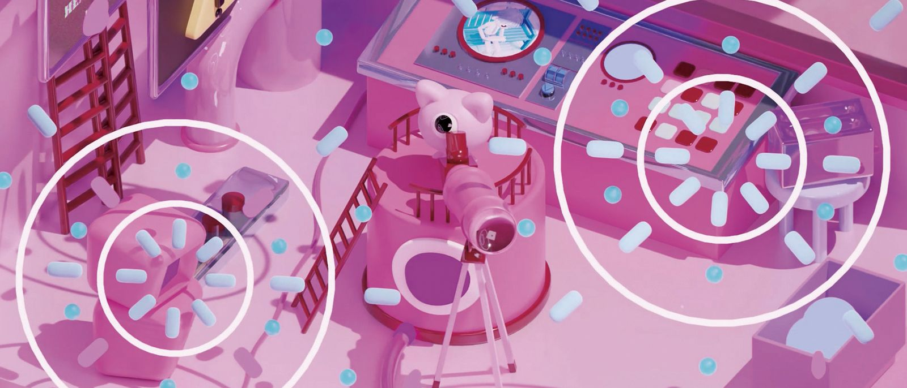
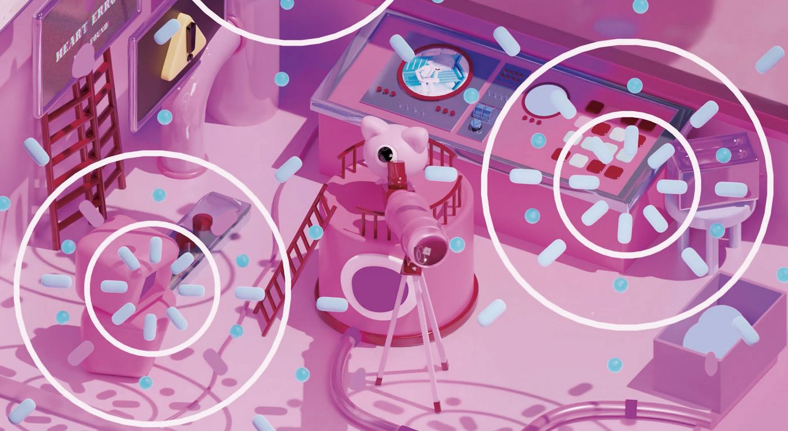
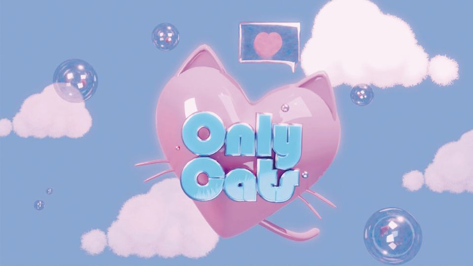
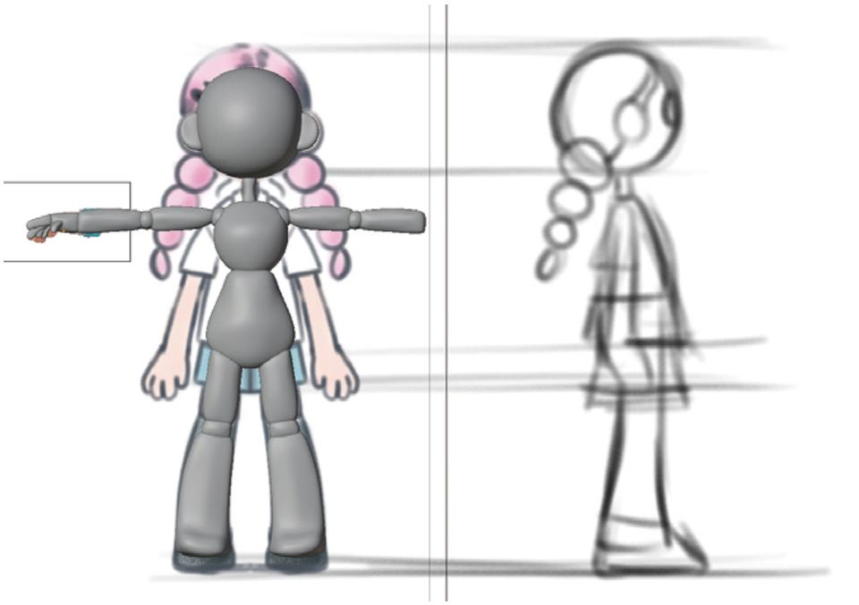
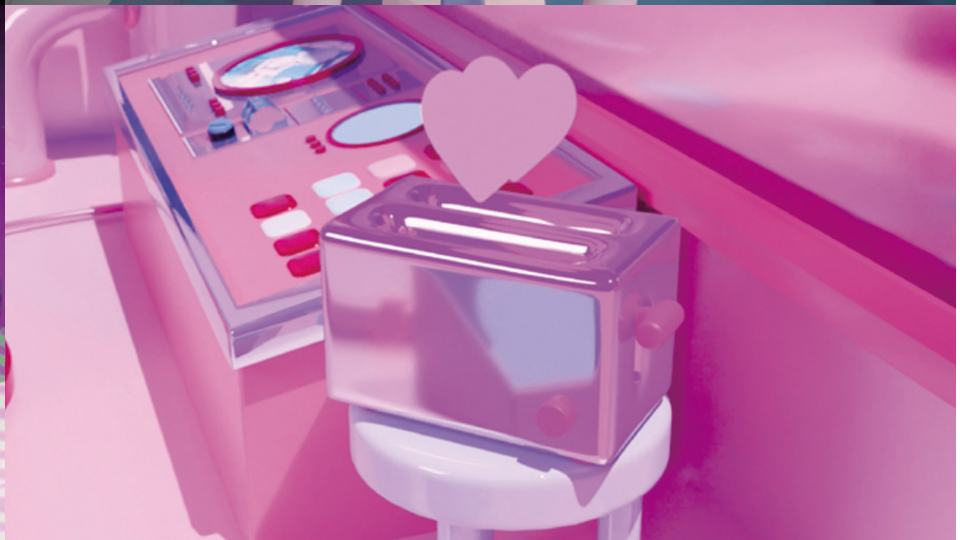
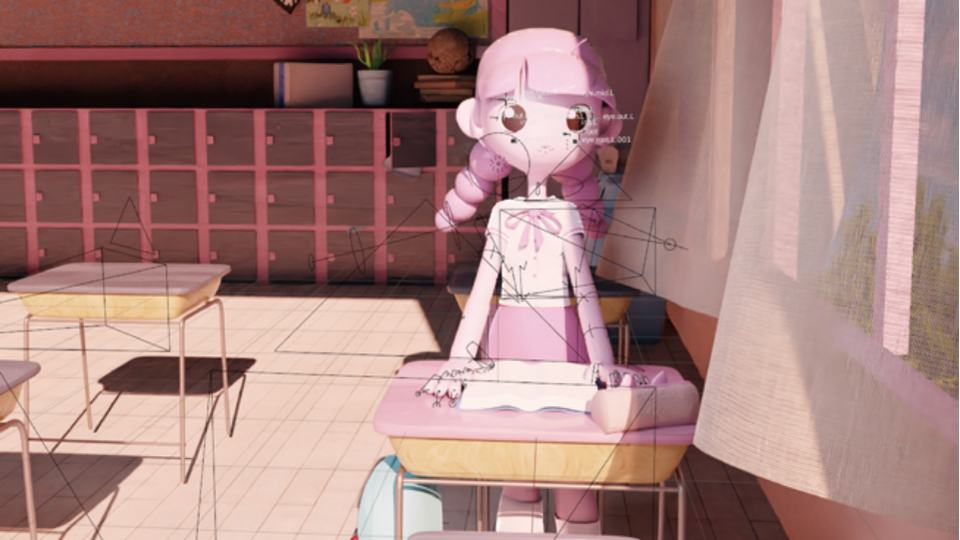
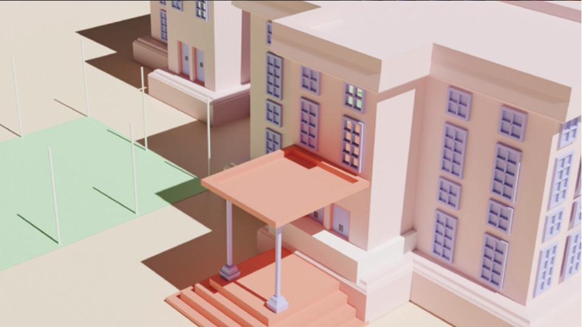

Each cell in the girl's body is working as one big company where exist a lot of roles. You can see the, small, big, cute and even strange cells and all of them always work for the only one big mission. One day, a girl, whose head was full of thoughts only about cats falls in love with a boy who looked like a cat. The girl’s body reacted to her new feeling. Her eyes, heart, and brain parts started to work really hard. In the end the girl decided to give the boy a can with cat food. The boy looked int her eyes and falls in love too.
- Student
- Kim Chaewon
- Field
- Animation
- Format
- 3D motion graphics
- Running time
- 01:31
- Genre
- Love Comedy
- Aspect ratio
- 16:9
- Exhibition
- 2023 Graduation Exhibition 「The Wonder Garden」
Synopsis
It’s a story about a girl who is not interested in people and only likes cats, and a boy who looks like a cat. This animation shows up the girl body reacting after she felt a new feeling for her, that was love.
Artist's intent
My main goal was making a story that will be bright and cute. So I created a visually colorful motion to emphasize the theme of love in my own style. For the most important points I chose color atmosphere and character’s quallity. After choosing color palette, I tryed to use different textures to show different moods by using only one color palette.
Stills





